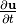
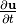
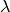
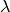
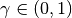
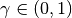

Scientist’s Documentation¶
WavDec is a software for the analysis of seismic surface waves. Love and Rayleigh waves are analyzed using a maximum likelihood approach. The implementation in WaveDec follows an algorithm described in [Maranò_et_al_2012].
Signal model¶
The two major types of seismic surface waves are Love and Rayleigh waves.
To measure seismic waves, we deploy an array of triaxial seismometers on the surface of the earth. We restrict our interest to small aperture arrays and work with a flat earth model. We use a three-dimensional, right-handed Cartesian coordinate system with the  axis pointing upward. The azimuth
axis pointing upward. The azimuth  is measured counter-clockwise from the
is measured counter-clockwise from the  axis. Each sensor measures the ground velocity along the direction of the axes of the coordinate system ,
axis. Each sensor measures the ground velocity along the direction of the axes of the coordinate system ,  , and . For the sake of simplicity, we provide wave equations of the displacement field , despite the actual measurement is often the velocity field .
, and . For the sake of simplicity, we provide wave equations of the displacement field , despite the actual measurement is often the velocity field .
We are interested in the analysis of waves propagating near the surface of the earth and having a direction of propagation lying on the horizontal plane  . We consider the wavefield to be composed of the superposition of several Rayleigh and Love waves. The wave equations we describe hereafter are valid for and for plane wave fronts. The direction of propagation of a wave is given by the wave vector , whose magnitude is the wavenumber and  is the wavelength. The phase velocity
. We consider the wavefield to be composed of the superposition of several Rayleigh and Love waves. The wave equations we describe hereafter are valid for and for plane wave fronts. The direction of propagation of a wave is given by the wave vector , whose magnitude is the wavenumber and  is the wavelength. The phase velocity  at frequency
at frequency  if related to the wavenumber as .
if related to the wavenumber as .
Love wave¶
{kind=link}
Fig. 1 Graphical representation of the displacement induced by a single Love wave.¶
Love waves exhibit a particle motion confined to the horizontal plane. The particle oscillates perpendicular to the direction of propagation. The particle displacement generated by a single Love wave at position and time is
(1)¶
The displacement induced by a single Love wave is depicted in on the right. The wavevector is shown. The motion of a single test particle is also shown.
At a given frequency  , a Love wave is parametrized by the parameter vector .
, a Love wave is parametrized by the parameter vector .
Rotational motions induced by a Love wave are
(2)¶
More details on the analysis of rotational motions are found in [Maranò_et_al_2014].
Rayleigh wave¶
{kind=link}
Fig. 2 Graphical representation of the displacement induced by a single Rayleigh wave.¶
Rayleigh waves exhibit an elliptical particle motion confined to the vertical plane perpendicular to the surface of the earth and containing the direction of propagation of the wave. The particle displacement generated by a single Rayleigh wave is
(3)¶
The displacement induced by a single Rayleigh wave is depicted in on the right. The wavevector is shown. The elliptical and retrograde motion of a single test particle is also shown.
At a given frequency , a Rayleigh wave is parametrized by the parameter vector .
The angle is called ellipticity angle of the Rayleigh wave and determines the eccentricity and the sense of rotation of the particle motion. The figure below (a) depicts the particle motion of a Rayleigh wave and how the ellipticity angle is defined. Rayleigh wave particle motion is depicted with a black ellipse and the sense of rotation with the black arrows on the ellipse. The axis is vertical to the surface. The axis lies on the surface and is parallel to the wavevector  . The ellipticity angle has the vertex at the topmost intersection between the axis and the particle motion ellipse. The first side of the ellipticity angle is the axis. The second side is the line connecting the vertex with the intersection of the axes and the particle motion ellipse (the intersection is chosen such that the particle motion at the intersection has a radians shift with respect to the vertex).
. The ellipticity angle has the vertex at the topmost intersection between the axis and the particle motion ellipse. The first side of the ellipticity angle is the axis. The second side is the line connecting the vertex with the intersection of the axes and the particle motion ellipse (the intersection is chosen such that the particle motion at the intersection has a radians shift with respect to the vertex).
When , the Rayleigh wave particle motion is said to be retrograde (i.e., the oscillation on the vertical component is shifted by radians with respect to the oscillation on the direction of propagation). Two possible retrograde particle motions and corresponding ellipticity angles are shown in (c) and (d). When the particle motion is said to be prograde, cf. (f) and (g). For  cf. (b) and (e) the particle motion polarization is horizontal and vertical, respectively.
cf. (b) and (e) the particle motion polarization is horizontal and vertical, respectively.
{kind=link}
Fig. 3 Depiction of the Rayleigh wave particle motion for several values of the ellipticity angle .
Rayleigh wave particle motion is depicted with a black solid line and the sense of rotation with the black arrows.
The axes denotes the surface vertical. The axis lies on the surface and is parallel to the wavevector .
(a) The elliptical particle motion for a retrograde Rayleigh wave. The quantities  , H, and V are also shown.
(b) The Rayleigh wave is horizontally polarized for . (c) Retrograde particle motion for . (d) Retrograde particle motion for . (e) The Rayleigh wave is vertically polarized for . (f) Prograde particle motion for . (g) Prograde particle motion for .
, H, and V are also shown.
(b) The Rayleigh wave is horizontally polarized for . (c) Retrograde particle motion for . (d) Retrograde particle motion for . (e) The Rayleigh wave is vertically polarized for . (f) Prograde particle motion for . (g) Prograde particle motion for . Download image (PDF).¶
Rotational motions induced by a Rayleigh wave are
(4)¶
More details on the analysis of rotational motions are found in [Maranò_et_al_2014].
Rayleigh wave with circular wavefront¶
The model described in (3) assumes planar wavefront. This assumption is suitable when the source is located far from the array of sensors. Whenever the source is close or even within the array the curvature of the wavefront need to be taken into account. In applications, this is necessary in active seismic surveying.
The following describe a Rayleigh wave accounting for the curved wavefront and for the amplitude decay due to geometrical spreading. The quantity  denotes the distance of the generic position from the source
denotes the distance of the generic position from the source
(5)¶
where is the ellipticity angle of the Rayleigh wave, is the azimuth angle formed by the vector and measured counter-clockwise from the -axis, is the wavenumber, and is the wavelength. With we denote Hankel functions of the second kind of order  . The quantity is the spectrum of the source function.
. The quantity is the spectrum of the source function.
More details on the joint analysis of active and passive surveys are found in [Maranò_et_al_2017b].
Relationship Between Classical H/V Ellipticity and Ellipticity Angle¶
We now explain the relationship between two representations of Rayleigh wave ellipticity: the classical H/V ellipticity and the ellipticity angle. We clarify how they can be fairly compared and outline the advantages of the latter representation. In practical terms, one can think of classical ellipticity as a quantity closely related to the empirical H/V ratio and the ellipticity angle as the parameter estimated by WaveDec.
In literature, Rayleigh wave ellipticity is referred to as the ratio of the amplitude on the radial component and on the vertical component, i.e., the ellipticity. Considering equation Eq. (3) and defining and , it follows that
Note that there is no information about the sense of rotation of the particle in the ratio as the sign of is lost. By considering directly the ellipticity angle it is possible to preserve this information and infer the sense of particle rotation.
The figure below depicts the two different representations for Rayleigh wave ellipticity in the case of a layer over half space and clarifies this idea. Namely, the SESAME structural model M2.1 is used. It is known from literature that in such a model the motion of the fundamental mode is retrograde at low frequencies. At each singularity (i.e., either or ) the sense of rotation changes from retrograde to prograde or vice versa.
{kind=link}
Fig. 4 (a) Classical H/V ellipticity and (b) ellipticity angle representation of Rayleigh wave ellipticity for the SESAME M2.1 model.
On the right of (b), the particle motion is sketched for different values of the ellipticity angle and for a wave propagating from left to right. Download image (PDF).¶
Firstly, we look at the fundamental mode (solid red line) in the representation of (a). The particle motion is retrograde up to 2vHz, where the first singularity occurs and the particle motion is horizontally polarized. Between 2 Hz and 3.8 Hz the particle motion is prograde, at 3.8 Hz the wave is vertically polarized. Above 3.8 Hz the motion is again retrograde. We stress that from this picture it is not possible to get any information about the sense of rotation of the particle and we are allowed to draw the previous considerations only because of the prior knowledge about the model.
Secondly, in (b) the ellipticity is represented by means of the ellipticity angle . As explained earlier in this section, the particle motion is retrograde when and it is prograde when . The polarization is vertical for and horizontal for . Similar considerations can be made for the higher modes, which are not depicted here.
Overview of the WaveDec method¶
We analyse array recordings of ambient vibrations using the WaveDec software, which implements the algorithm presented in [Maranò_et_al_2012]. Wavefield parameters are estimated following the Maximum Likelihood (ML) criterion. For Love and Rayleigh waves estimated parameters include wavenumber and direction of arrival. For Rayleigh waves, the ellipticity angle is also estimated. The algorithm jointly processes the three sensors components and provides an estimate of Rayleigh wave ellipticity together with the sense of rotation (i.e., prograde vs. retrograde particle motion). The simultaneous presence of multiple Love and Rayleigh waves is accounted for. The number of waves modelled is gradually increased by the algorithm and wave parameters are iteratively re-estimated. The type and the number of waves modelled are chosen adaptively from the algorithm following a statistical criterion. As it will be clear from our results, there is a significant improvement when considering jointly multiple waves of multiple types.
Measurement model¶
We rely on noisy measurements from  channels. In the case of
channels. In the case of  three-component sensors, we have . In particular, on the -th channel the measurements at discrete instants are
three-component sensors, we have . In particular, on the -th channel the measurements at discrete instants are
where is a deterministic function with unknown wavefield parameters and is zero-mean additive white Gaussian noise with variance .
With this signal model, the probability density function (PDF) of the observations  of is
of is
(6)¶
where we grouped all the measurement as and defined .
In the proposed technique, instead of computing the likelihood of the observation directly from (6), we model it by means of a factor graph. This enables the algorithm a more efficient computation of the likelihood.
Maximum likelihood estimation¶
An ML estimate is found maximizing the likelihood function
This maximization is performed analytically for the parameters and  . It is performed numerically for the remaining parameters using a grid search first and then a numerical optimization routine.
. It is performed numerically for the remaining parameters using a grid search first and then a numerical optimization routine.
Model selection¶
In the seismic wavefield several waves of different functional forms are present simultaneously. This interference can severely downgrade the quality of the analysis. WaveDec follows an approach, called wavefield decomposition, enabling us to separate the contribution of different waves and improving the accuracy of the parameter estimation. In the proposed technique the composition of the wavefield can vary in time. The number of waves modelled by the algorithm is increased gradually. Each estimated parameter vector benefits from the estimation of the other waves as the parameter estimation of each wave is repeated iteratively.
We use a penalized version of Bayesian information criterion (BIC) where a scalar  allows to control the complexity of the model. The penalized BIC is defined as
allows to control the complexity of the model. The penalized BIC is defined as
where denotes the number of parameters of the statistical model and  is the number of measurements. The parameter enables us to follow a pure BIC model selection strategy for
is the number of measurements. The parameter enables us to follow a pure BIC model selection strategy for  , an ML approach (which will result in overfitting) for
, an ML approach (which will result in overfitting) for  , or any intermediate strategy for different values .
, or any intermediate strategy for different values .
Example applications¶
In this section, we present some results obtained with WaveDec and WaveDecActive. For more details see [Maranò_et_al_2017a].
SESAME M2.1¶
We first consider ambient vibrations from a high-fidelity synthetic wavefield. The dataset was created within the SESAME project. We consider a model of a layer of softer sediments over an half-space with higher velocity.
{kind=link}
Fig. 5 Estimated Love wave wavenumber, fundamental mode.¶
The picture above show the estimated Love wave dispersion curve for the fundamental mode. Estimated values and their uncertainty is shown with a blue solid line. Theoretical values are shown with the green solid line.

Fig. 6 Estimated Rayleigh wave wavenumber, fundamental mode.¶ |
Fig. 7 Estimated Rayleigh wave ellipticty angle, fundamental mode.¶ |
{kind=link}
The pictures above show the estimated Rayleigh wave dispersion curve (left) and the Rayleigh wave ellipticity angle (right) for the fundamental mode. From the left picture we infer that the particle motion of the Rayleigh wave fundamental mode is prograde above 2 Hz until 3.8 Hz, i.e. . At 3.8 Hz the particle is vertically polarized. Above this frequency the wave has a retrograde particle motion, i.e. . This is a standard behaviour of the ellipticity angle curve in presence of a single interface with a strong velocity contrast.

Fig. 9 Estimated Rayleigh wave ellipticty angle, first higher mode.¶ |
{kind=link}
The pictures above show the estimated Rayleigh wave dispersion curve (left) and the Rayleigh wave ellipticity angle (right) for the first higher mode.
{kind=link}
Fig. 10 Comparison of H/V ratios (red lines) and ellipticity angle (blue lines, two modes), and theoretical values (green).¶
In the figure above, the H/V ratios of each sensor are compared with the ellipticity curves from array processing. The result of each sensor is depicted with a light red line while the average H/V of all stations is solid red. The ellipticity curve for the fundamental mode is depicted with a solid blue line and the curve for the first higher mode with a dashed blue line. The ellipticity of both the fundamental mode and the first higher mode are in good agreement with the theoretical values (depicted in green). The only slight deviation from the theoretical values is observed below 3 Hz. We observe that this frequency corresponds to the frequency where the dispersion curve intersects the lower array resolution limit and can thus be explained with a loss of resolution of the array. Above 3 Hz, the right flank of the H/V peak agrees well with the ellipticity curve of the fundamental mode. The location of the trough at just below 4 Hz can be understood rather clearly both from the H/V ratios and from the ellipticity curve. A singularity at 5 Hz is only seen as a sharp peak from the ellipticity curve of the first higher mode while is not seen in the H/V ratios.
Benefit of joint modeling Rayleigh and Love waves¶
By modeling jointly both Rayleigh and Love waves, the accuracy of the estimated parameters is improved. We consider the retrieval of Rayleigh wave ellipticty when modeling i) both Rayleigh and Love waves and ii) modeling only Rayleigh waves and ignoring Love waves. The SESAME M2.1 model is used. This example is presented in [Maranò_et_al_2017a].
Fig. 11 Rayleigh wave ellipticty angle, fundamental mode. Both Rayleigh and Love waves are modeled by WaveDec.¶ |
Fig. 12 Rayleigh wave ellipticty angle, fundamental mode. Only Rayleigh waves are modeled my WaveDec.¶ |
{kind=link}
Figures above show the ellipticity angle of the fundamental mode when modelling both Love and Rayleigh waves (left) and when modelling only Rayleigh waves and ignoring Love waves (right). The deviation of the picked ellipticity angle curve with respect to the theoretical values around 3 Hz is immediately evident on the right-hand picture. In particular, there is a systematic shift of the curve towards higher values of the ellipticity angle, corresponding to a more horizontally polarized particle motion. In other words, by not modeling Love waves, there is more energy unexplained by the algorithm on the horizontal components and this lead to a wrong estimate of the Rayleigh wave ellipticty angle.
{kind=link}
Fig. 13 Difference between estimated and theoretical ellipticity angle.¶
Fig. Difference between estimated and theoretical ellipticity angle. depicts the differences between the estimated and the true ellipticity angle for the fundamental mode. The red line depicts the difference obtained when WaveDec is modelling jointly Rayleigh and Love waves. The blue line depicts the difference obtained when only Rayleigh waves are modelled and Love waves ignored. It is immediately possible to observe that without modelling Love waves there is a large deviation in the estimated Rayleigh ellipticity angle between 2.5 and 3.8 Hz. When the Love waves are also modelled, the bias is smaller and only present below 3 Hz. We note that the lower resolution limit of the array is at 3 Hz, so the deviation from the true curve may also be related to this fact.
We conclude that ignoring the presence of Love waves can result in a bias in the recovered Rayleigh wave ellipticity. In fact the ellipticity angle is larger, suggesting a more horizontally polarized Rayleigh wave than in reality. This is reasonable since the energy of Love waves is limited to the horizontal components. By jointly modelling both Love and Rayleigh waves using WaveDec it is possible to mitigate such a bias.
Davos (SDAK)¶
The site SDAK in Davos, Canton of Grisons is located in the centre of a narrow sedimentary basin of around 500 m width in the Swiss Alps. The underground is composed of alluvial deposits of the Landwasser river. Previous site studies suggest that the site has a . We denote with the average velocity of shear waves in the superficial 30 meters.
This site is representative of a common situation where we have a single very strong contrast. For most stations, H/V ratios depicted below with red lines exhibit a clear peak around 1.5 Hz and a trough at 2.5 Hz. However, we observe that for some stations located at the edge of the basin the resonance frequency is shifted to higher values. In the same figure, the Rayleigh wave ellipticity (blue line) retrieved from the array allows us to pinpoint very clearly the location of the trough. We used all the available stations for the retrieval of the ellipticity angle using the array, disregarding the fact that some stations exhibit different H/V. We expect the ellipticity retrieved from the array to be representative of the average structure of the site.
Fig. 14 Rayleigh wave wavenumber, fundamental mode.¶ |
Fig. 15 Rayleigh wave ellipticty angle, fundamental mode.¶ |
{kind=link}
{kind=link}
The figures above depict the estimated wavenumber and ellipticity angle from the array recording. The dispersion curve is picked until just below 2 Hz due to the lower resolution limit. The ellipticity angle shows prograde particle motion between the lower frequency limit and the singularity at 2.5 Hz. At 2.5 Hz the particle motion is vertically polarized, above this frequency the ellipticity angle is constant and the particle motion is retrograde.
{kind=link}
Fig. 16 Comparison of H/V ratios (red lines) and ellipticity angle (blue lines, two modes).¶
We now consider the ellipticity retrieved from the array and the average H/V ratio, shown in The figure above. At low frequencies, the ellipticity is limited by the resolution of the array and does not allow us to identify accurately the fundamental frequency of the site. On the right flank of the peak, there is a discrepancy between the H/V ratio and the array ellipticity. The H/V ratio exhibits larger values than the array ellipticity and this could be explained by the presence of Love waves in the wavefield. As discussed in the previous sections, WaveDec models the presence of Love waves and thus reduces their impact on the estimated ellipticity. The trough at 2.5 Hz is very clearly identified looking at the array ellipticity but it is not as easily identified from H/V ratios. One reason could be that the presence of Love waves in the wavefield augments the energy on the horizontal components and thus increases the value of the H/V ratio.
Zurich Airport (SKLW) - Passive¶
The site SKLW in Kloten, Canton of Zurich is located on a large glacial gravel terrace in a wide, but shallow basin. The array is located in close vicinity of the airport of Zurich.
Fig. 17 Rayleigh wave wavenumber, fundamental mode.¶ |
Fig. 18 Rayleigh wave ellipticty angle, fundamental mode.¶ |
{kind=link}
{kind=link}
Wavenumber and ellipticity angle estimates for the fundamental mode are shown in Figs. 7c and 7d, respectively. The ellipticity angle of the fundamental mode exhibits a common pattern from prograde above the resonance frequency to retrograde at higher frequencies.
Fig. 19 Rayleigh wave wavenumber, fundamental mode.¶ |
Fig. 20 Rayleigh wave ellipticty angle, fundamental mode.¶ |
{kind=link}
{kind=link}
Wavenumber and ellipticity angle estimates for the first higher mode are shown in Figs. 7e and 7f, respectively. The ellipticity angle of the first higher mode indicates prograde particle motion over the entire frequency range. At about 9 Hz the wave is almost horizontally polarized, above this frequency, the value of the ellipticity angle decreases slightly.
{kind=link}
Fig. 21 Comparison of H/V ratios (red lines) and ellipticity angle (blue lines, two modes).¶
In this figure the H/V ratios are compared with the ellipticity of two modes. Peak and trough of the H/V ratios are not very clearly identified, possibly due to the lack of a strong contrast. On the contrary, the WaveDec ellipticity angle information allows us to pinpoint the trough very accurately.
Zurich Airport (SKLW) - Active¶
With an active source in the proximity of the array, we employ the wave equations (5). We are able to retrieve dispersion curve at higher frequencies, complementing the information retrieved with the passive survey.
Note
To be completed. This section pertains to the work presented in [Maranò_et_al_2017b].
Baar (SBAS)¶
The site SBAS in Baar, Canton of Zug lies on the alluvial cone of the Lorze river, about 2.5 km from the mouth of the river in Lake Zug. The underground geology consists of gravel, sand, and silt. Previous site studies determined .
Fig. 22 Rayleigh wave wavenumber, fundamental mode.¶ |
Fig. 23 Rayleigh wave ellipticty angle, fundamental mode.¶ |
{kind=link}
{kind=link}
The figure on the left shows wavenumber estimates with the picked fundamental mode of the Rayleigh wave. The figure on the right depicts the corresponding ellipticity angle estimates are shown. Rayleigh wave ellipticity exhibits several singularities where the particle motion switches from prograde to retrograde or viceversa. The particle motion is prograde until 2.5 Hz, where the polarization is purely vertical. Until 3.5 Hz the particle motion is retrograde. At 3.5 Hz, the particle motion is purely horizontal. From 3.5 Hz until just above 6 Hz the motion is prograde and finally changes to retrograde one last time.
{kind=link}
Fig. 24 Comparison of H/V ratios (red lines) and ellipticity angle (blue line).¶
The H/V ratio curves shown above exhibit multiple peaks and troughs. The peak above 1 Hz identifies the fundamental frequency of the site and the other peak, just above 3.5 Hz, witnesses the presence of another shallower contrast. The ellipticity of the fundamental mode of the Rayleigh wave shows a good agreement with the H/V ratios. The trough at 2.5 Hz is identified at the same frequency from both H/V and ellipticity. The peak around 3-4 Hz is also found with both methods, with a minor discrepancy. For the second trough, around 6-7 Hz, there is a discrepancy between H/V ratios and ellipticity. We observe that the H/V curves are quite different in this frequency range, possibly reflecting inhomogeneities of the subsurface. The array ellipticity is probably most representative of the average structure below the array. We remark that the ellipticity curve allows to pinpoint much more clearly the frequency of the singularities with respect to the H/V ratio.
Despite the many singularities observed at this site, usingWaveDec it is possible to easily identify the dispersion curve over a broad frequency range. This would not be possible when modelling the vertical and the radial component separately. In fact, we observed that using the method proposed in Poggi & Fäh (2010) there is a lack of energy on the vertical (radial) component when the Rayleigh wave is horizontally (vertically) polarized.
Rayleigh wave ellipticity at different sites¶
A quick comparison of ellipticity angle curves retrieved at selected sites. All the curves refer to the fundamental mode of the Rayleigh wave. More details and discussion are found in [Maranò_et_al_2017a].
Fig. 25 Single interface, Davos (SDAK).¶ |
Fig. 26 Two contrasts, Baar (SBAS).¶ |
Fig. 27 Gradient, Basel Klybeck (SBAK).¶ |
Fig. 28 Rock site, Chur (SCUG).¶ |
{kind=link}
{kind=link}
{kind=link}
{kind=link}